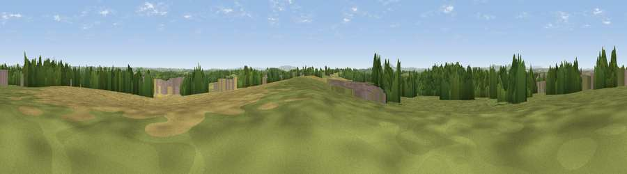

Newland Common
#21243 in England · top 45% of its area beats it · near OddingleyThe view, rendered

A 360° render of this exact spot computed from the terrain model, tree cover and land cover — summer colours, afternoon light, calibrated against photographs of famous viewpoints. Real trees, hedges and buildings will differ in detail.
The panorama
Grey silhouette: terrain skyline in each direction (720 bearings, Earth curvature and refraction included). Dashed green: skyline with trees (+15 m) and buildings (+8 m) as obstacles. Blue strip: how far the ground is visible on each bearing.
Where the view opens
Wedge length = distance to the farthest visible ground on that bearing (vegetation-aware). Rings at 10, 25 and 50 km.
What fills the view
44% grassland · 23% cropland · 23% woodland · 9% built-up
Angular shares of the visible panorama (visual magnitude), not map area. Landscape diversity 0.55 (0–1 Shannon).
Key numbers
More beautiful places nearby
The staircase of upgrades: each row has a higher view potential than everything closer. Driving times are estimates from straight-line distance, calibrated against real road routing — check an actual route before setting out.
| Place | Direction | Drive | Score |
|---|---|---|---|
| Viewpoint near Crowle | SSE · 3 km | ~8 min | 52.8 |
| Viewpoint near Crowle | SSE · 4 km | ~9 min | 55.9 |
| Viewpoint near Hanbury | E · 5 km | ~10 min | 62.1 |
| Viewpoint near Littleworth | SSW · 9 km | ~18 min | 65.8 |
| Viewpoint near Martley | W · 15 km | ~27 min | 69.6 |
| Viewpoint near Abberley | WNW · 16 km | ~28 min | 77.5 |
| Viewpoint near Great Witley | WNW · 16 km | ~28 min | 83.4 |
| North Hill | SW · 20 km | ~34 min | 86.8 |
52.24475, -2.13946 · source: dobih hill · position refined by local search. Computed location — check access rights before visiting.